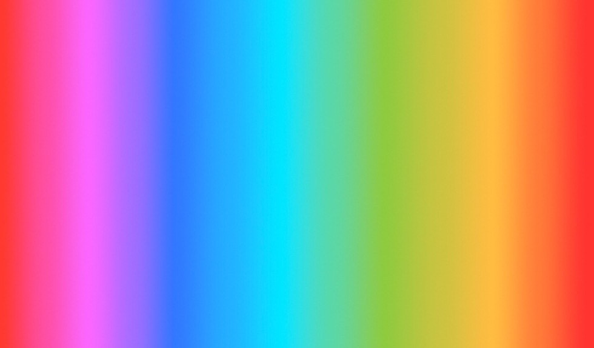
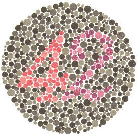
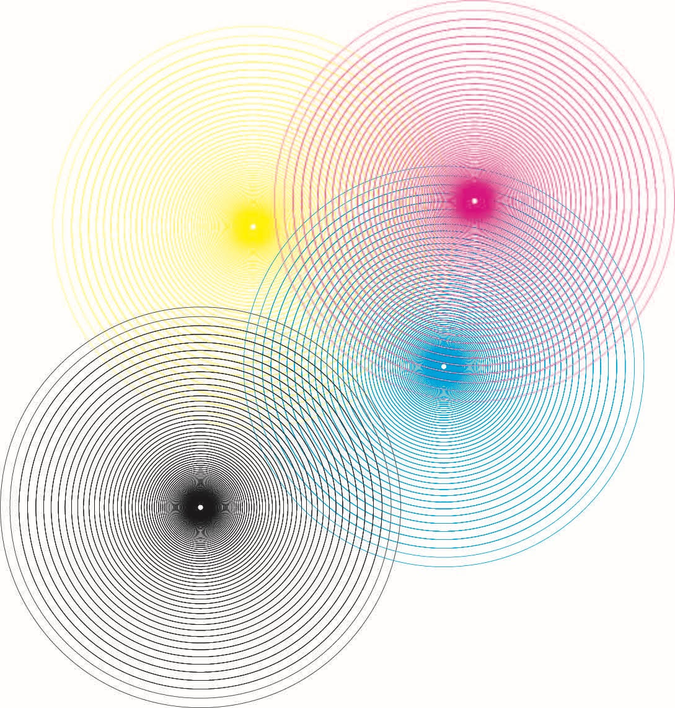

For this website, I tried all different kinds of filters in Instagram to explore how Instagram creates form. I used a gradient image to show how each filter makes contrast between colors. I thought a color blind test image is a great example to define differences between filters. Moire patterns show how the filters work for CMYK colors. Also, you can click the names if you want to download filtered images.
If you want to test filters through the original images, download them below.
  